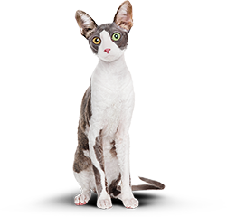
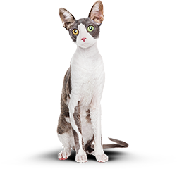

сервис функционального питания для котов
функциональное питание для котов
Занялся собой? Займись котом!
 подобрать программу
подобрать программу
наши услуги
-
похудение
Ваш кот весит больше собаки и почти утратил способность лазить по деревьям? Пора на диету! Cat Energy Slim поможет вашему питомцу сбросить лишний вес.
каталог slim -
набор массы
Заработать авторитет среди дворовых котов и даже собак? Серия Cat Energy Pro поможет вашему коту нарастить необходимые мышцы!
каталог pro
преимущества нашего питания для котов
как это работает
-
Функциональное питание содержит только полезные питательные вещества.
-
Выпускается в виде порошка, который нужно лишь залить кипятком и готово.
-
Замените один-два приема обычной еды на наше функциональное питание.
-
Уже через месяц наслаждайтесь изменениями к лучшему вашего питомца!
Результат питания кормом cat energy
Живой пример
Борис сбросил 5 кг за 2 месяца, просто заменив свой обычный корм на Cat Energy Slim. Отличный результат без изнуряющих тренировок! При этом он не менял своих привычек и по-прежнему спит по 16 часов в день.
- снижение веса
- 5 кг
- затрачено времени
- 60 дней
- затраты на питание:
- 15 000 руб.
 
